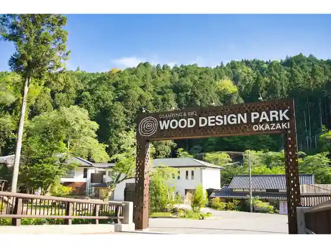
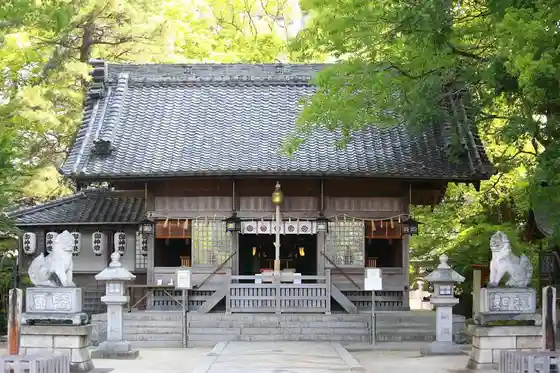

Mitsui Autoretto Park Okazaki
Okazaki, Aichi · 0564-64-8700 · Official / source link
Uddodezain Park Okazaki
Okazaki, Aichi · 080-5810-6322 · Official / source link

Sugo Shrine
Okazaki, Aichi · 0564-23-2506 · Official / source link

Okazaki Bijutsu Museum
Okazaki, Aichi · 0564-28-5000 · Official / source link
Okazaki Sekai Kodomo Bijutsu Museum
Okazaki, Aichi · 0564-53-3511 · Official / source link
Kuragari Keikoku Campground
Okazaki, Aichi · 0564-83-2057 · Official / source link
Mitsubishijidosha Kogyo Okazaki Seisakusho
Okazaki, Aichi · 0564-34-8913 · Official / source link
Maruishi Jozo
Okazaki, Aichi · 0564-23-3333 · Official / source link
Shibata Shuzo Ba
Okazaki, Aichi · 0564-84-2007 · Official / source link
Wan Park
Okazaki, Aichi · 0564-82-3511 · Official / source link
Okazaki Yado Tokaido Niju Shichi Magari
Okazaki, Aichi · Official / source link
Iga Hachiman Shrine
Okazaki, Aichi · 0564-26-2789 · Official / source link
Ryujo Shrine
Okazaki, Aichi · 0564-21-5517 · Official / source link
Roku Tokoro Shrine
Okazaki, Aichi · 0564-51-2930 · Official / source link
Kakukyu Hatchomiso (Hatchomiso no Sato)
Okazaki, Aichi · 0564-21-0151 · Official / source link
Maruya Hatchomiso
Okazaki, Aichi · 0564-22-0222 · Official / source link
Higashi Park
Okazaki, Aichi · 0564-24-0050 · Official / source link
Tokaido Fujikawa Yado Fujikawa Yado Museum
Okazaki, Aichi · 0564-23-6177 · Official / source link
Roadside Station (Fujikawa Yado)
Okazaki, Aichi · 0564-66-6031 · Official / source link
Kyuhon Ta Tadatsugu Tei
Okazaki, Aichi · 0564-23-5015 · Official / source link
Ichibata Yamaimo Shi Tera / Ushi Josan
Okazaki, Aichi · 0564-48-7111 · Official / source link
Okazaki Shizen Experience Forest
Okazaki, Aichi · Official / source link
Okuden Camp Office (Kyu Okuden Han Jinya Ato)
Okazaki, Aichi · 0564-45-7230 · Official / source link
NEOPASA Okazaki
Okazaki, Aichi · 0120-922-229 · Official / source link
Tori Kawa Hotaru Village
Okazaki, Aichi · 0564-82-3027 · Official / source link
Takiyama Tera Takiyama Toshogu
Okazaki, Aichi · 0564-46-2296 · Official / source link
Taiju Tera
Okazaki, Aichi · 0564-21-3917 · Official / source link
Okazaki Shiro Okazaki Shiro Park Mikawa Bushi no Yakata Ieyasu Kan
Okazaki, Aichi · 0564-22-2122 · Official / source link
Iwatsu Tenmangu Shrine (Iwatsu Tenjin)
Okazaki, Aichi · 0564-45-2525 · Official / source link